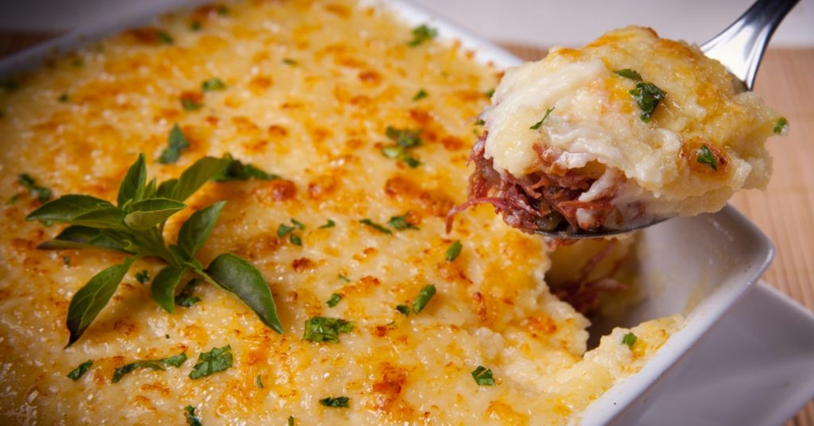

Escondidinho de Carne Seca

Escondidinho é um prato bastante popular nos estados do Nordeste brasileiro.
Feito com carne de jabá (charque ou carne-seca). Esta é uma receita de carne seca desfiada entre camadas
de purê de mandioca ou batata.
Prato para duas pessoas.
R$95,00
Retornar para Cardápio